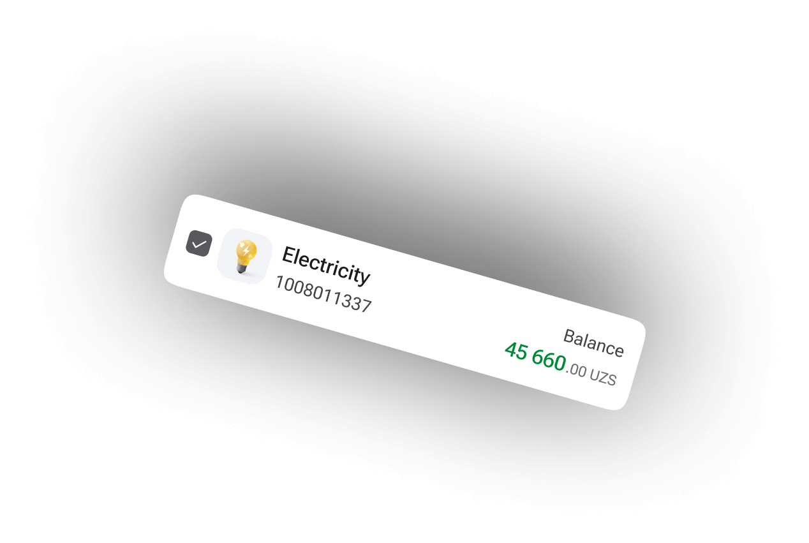
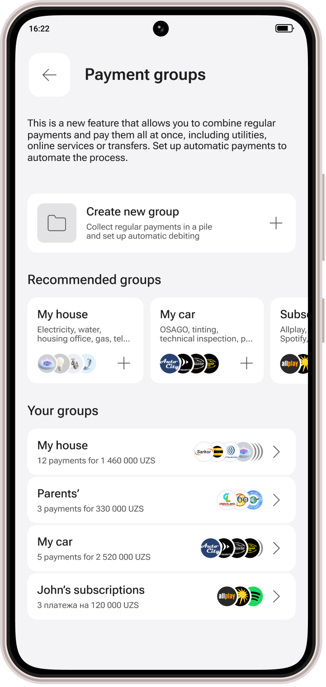
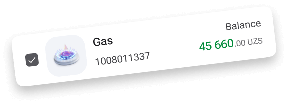
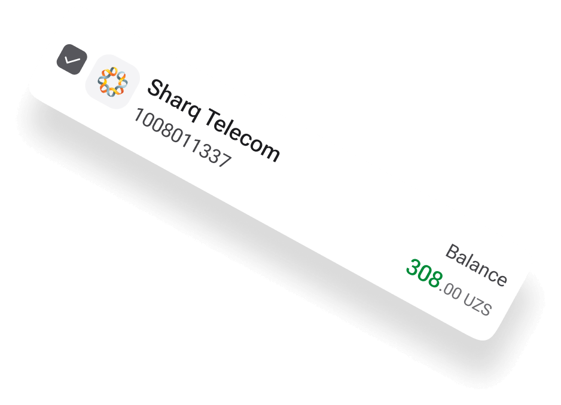

Project Case Study: Redesign of the App's Home Page
Overview
Project: Home Page Redesign
Role: Senior Product Designer
Duration: 6 months
Challenge
The existing home page of the application was outdated and required functional improvements. The goal was to transform the app from a simple payment platform into a daily-use app that allows users to manage all their financial tasks conveniently.
Objectives
- Redesign the home page to enhance user experience and functionality.
- Conduct a thorough analysis of 12 payment and banking apps in Uzbekistan to identify strengths and weaknesses.
- Complete the redesign of 5 main sections of the app within six months.
- Prioritize and iterate the home page design based on user feedback and testing.
Process
-
Research and Analysis:
- Analyzed 12 local payment and banking applications.
- Identified key strengths and weaknesses of each interface.
- Conducted user research to understand the needs and pain points of current users.
-
Design and Iteration:
- Developed initial design concepts for the home page, focusing on improving functionality and modernizing the look.
- Conducted three rounds of user testing, gathering feedback on each iteration.
- Made adjustments based on user feedback, focusing on usability and ease of navigation.
-
User Testing and Feedback:
- Collaborated with the bank's customer service office to test prototypes with actual users.
- Conducted in-depth testing sessions, observing user interactions and collecting qualitative data.
- Incorporated feedback into three iterations of design changes to refine the home page layout and functionality.
-
Implementation and Prioritization:
- Focused on key areas: prioritizing zones for easy access, highlighting important system messages, and supporting cross-selling of the bank's products.
- Placed customizable action lists within easy reach of the user's thumb for natural interaction.
- Emphasized blocks for product status, cashback information, and installment offers, aligning with the bank’s strategic goals.
- Implemented a prominent banner on larger phones to highlight new products and promotions.
Key Features of the Redesigned Home Page
- Priority Zones: Key areas were placed for convenient access, such as product status and cashback blocks.
- Customizable Actions: The action list is easily reachable, enhancing user convenience.
- Enhanced Navigation: Improved navigation to include a central search tool, making it the primary navigation method.
- Product Promotions: Banners for new products and promotions are prominently displayed.
- Integrated Card Information: Moved card information closer to the balance display, highlighting the ability to order new cards and manage existing ones.
Conclusion
The redesigned home page successfully transformed the application into a more functional and user-friendly daily-use app. The iterative design process, grounded in thorough research and user feedback, ensured that the final product met user needs and exceeded expectations. The redesign led to significant improvements in user engagement, satisfaction, and overall app usability.
   